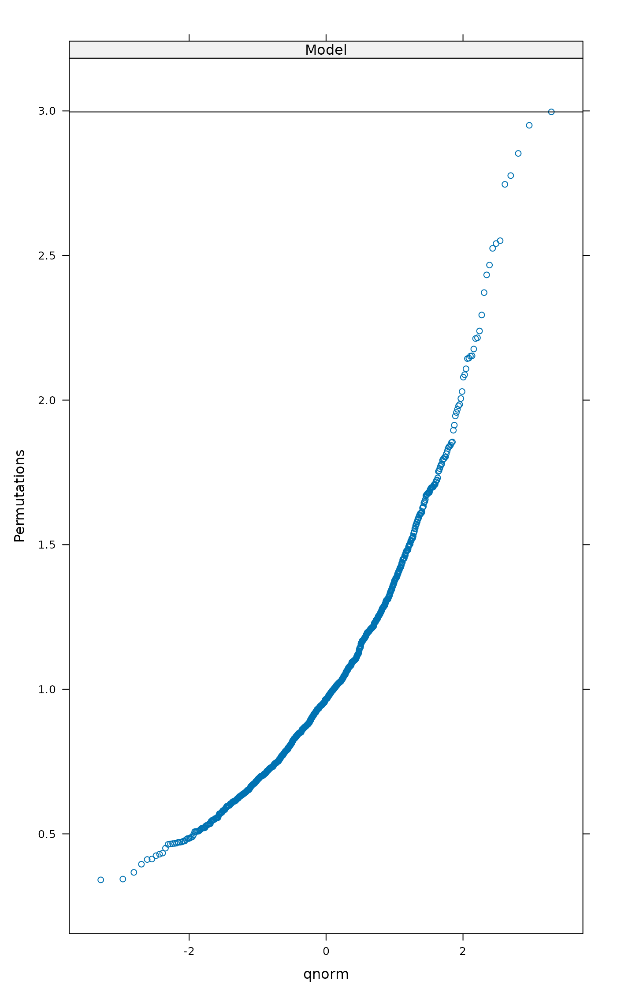
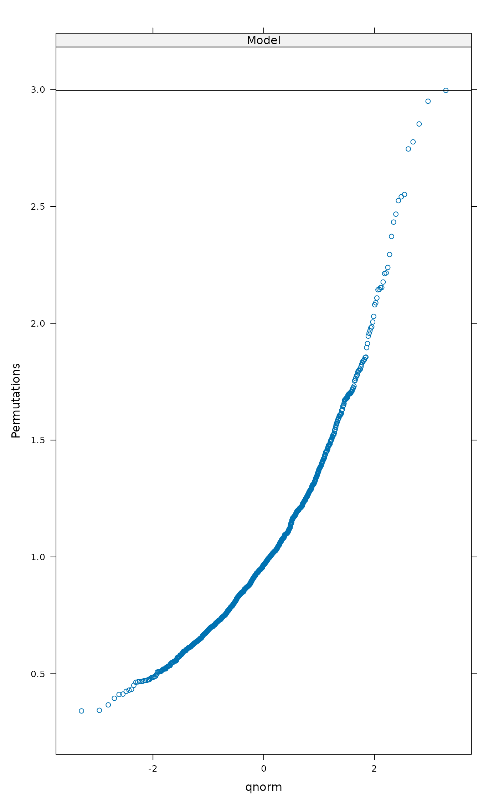

Extract, Analyse and Display Permutation Results
permustats.RdThe permustats function extracts permutation results of
vegan functions. Its support functions can find quantiles and
standardized effect sizes, plot densities and Q-Q plots.
Usage
permustats(x, ...)
# S3 method for class 'permustats'
summary(object, interval = 0.95, alternative, ...)
permulattice(x, plot = c("densityplot", "qqmath"), observed = TRUE,
axislab = "Permutations", ...)
# S3 method for class 'permustats'
densityplot(x, data, observed = TRUE,
xlab = "Permutations", ...)
# S3 method for class 'permustats'
density(x, observed = TRUE, ...)
# S3 method for class 'permustats'
qqnorm(y, observed = TRUE, ...)
# S3 method for class 'permustats'
qqmath(x, data, observed = TRUE, sd.scale = FALSE,
ylab = "Permutations", ...)
# S3 method for class 'permustats'
boxplot(x, scale = FALSE, names, ...)
# S3 method for class 'permustats'
pairs(x, ...)Arguments
- object, x, y
The object to be handled.
- interval
numeric; the coverage interval reported.
- alternative
A character string specifying the limits used for the
intervaland the direction of the test when evaluating the \(p\)-values. Must be one of"two.sided"(both upper and lower limit),"greater"(upper limit),"less"(lower limit). Usuallyalternativeis given in the result object, but it can be specified with this argument.- plot
Use lattice function
densityplotorqqmath.- xlab, ylab, axislab
Label for the axis displaying permutation values.
- observed
Add observed statistic among permutations.
- sd.scale
Scale permutations to unit standard deviation and observed statistic to standardized effect size.
- data
Ignored.
- scale
Use standardized effect size (SES).
- names
Names of boxes (default: names of statistics).
- ...
Other arguments passed to the function. In
densitythese are passed todensity.default, and inboxplottoboxplot.default.
Details
The permustats function extracts permutation results and
observed statistics from several vegan functions that perform
permutations or simulations.
The summary method of permustats estimates the
standardized effect sizes (SES) as the difference of observed
statistic and mean of permutations divided by the standard deviation
of permutations (also known as \(z\)-values). It also prints the
the mean, median, and limits which contain interval percent
of permuted values. With the default (interval = 0.95), for
two-sided test these are (2.5%, 97.5%) and for one-sided tests
either 5% or 95% quantile and the \(p\)-value depending on the
test direction. The mean, quantiles and \(z\) values are evaluated
from permuted values without observed statistic, but the
\(p\)-value is evaluated with the observed statistic. The
intervals and the \(p\)-value are evaluated with the same test
direction as in the original test, but this can be changed with
argument alternative. Several permustats objects can
be combined with c function. The c function checks
that statistics are equal, but performs no other sanity tests.
The results can be displayed either as conventional graphics or
lattice graphics. Lattice graphics can be used either with
function permulattice or directly with lattice functions
densityplot or qqmath. Function permulattice can
be used directly, but for densityplot and qqmath
lattice must be first loaded and attached with
library(lattice)
The density and densityplot methods display the
kernel density estimates of permuted values. When observed value of
the statistic is included in the permuted values, the
densityplot method marks the observed statistic as a vertical
line. However the density method uses its standard plot
method and cannot mark the observed value. Only one statistic can be
displayed with density and for several statistics
permulattice or densityplot must be used.
The qqnorm and qqmath methods display Q-Q plots of
permutations, optionally together with the observed value (default)
which is shown as horizontal line in plots. qqnorm plots
permutation values against standard Normal variate. qqmath
defaults to the standard Normal as well, but can accept other
alternatives (see standard qqmath). The
qqmath function can also plot observed statistic as
standardized effect size (SES) with standandized permutations
(argument sd.scale). The permutations are standardized
without the observed statistic, similarly as in summary.
Only one statistic can be shown with qqnorm and for several
statistics permulattice or qqmath must be used.
Function boxplot draws the box-and-whiskers plots of effect
size, or the difference of permutations and observed statistic. If
scale = TRUE, permutations are standardized to unit standard
deviation, and the plot will show the standardized effect sizes.
Function pairs plots permutation values of statistics against
each other. The function passes extra arguments to
pairs.
The permustats can extract permutation statistics from the
results of adonis2,
anosim, anova.cca, mantel,
mantel.partial, mrpp,
oecosimu, ordiareatest,
permutest.cca, protest, and
permutest.betadisper.
Value
The permustats function returns an object of class
"permustats". This is a list of items "statistic" for
observed statistics, permutations which contains permuted
values, and alternative which contains text defining the
character of the test ("two.sided", "less" or
"greater"). The qqnorm and
density methods return their standard result objects.
Author
Jari Oksanen with contributions from Gavin L. Simpson
(permustats.permutest.betadisper method and related
modifications to summary.permustats and the print
method) and Eduard Szöcs (permustats.anova.cca).
Examples
data(dune, dune.env)
mod <- adonis2(dune ~ Management + A1, data = dune.env)
## use permustats
perm <- permustats(mod)
summary(perm)
#>
#> statistic SES mean lower median upper Pr(perm)
#> Model 2.9966 5.1322 1.0296 0.9637 1.7332 0.001 ***
#> ---
#> Signif. codes: 0 ‘***’ 0.001 ‘**’ 0.01 ‘*’ 0.05 ‘.’ 0.1 ‘ ’ 1
#>
#> (Interval (Upper - Lower) = 0.95)
## lattice graphics
permulattice(perm, "densityplot")
 permulattice(perm, "qqmath")

boxplot(perm, scale=TRUE, lty=1, pch=16, cex=0.6, col="hotpink", ylab="SES")
abline(h=0, col="skyblue")
permulattice(perm, "qqmath")

boxplot(perm, scale=TRUE, lty=1, pch=16, cex=0.6, col="hotpink", ylab="SES")
abline(h=0, col="skyblue")
 ## example of multiple types of statistic
mod <- with(dune.env, betadisper(vegdist(dune), Management))
pmod <- permutest(mod, nperm = 99, pairwise = TRUE)
perm <- permustats(pmod)
summary(perm, interval = 0.90)
#>
#> statistic SES mean lower median upper Pr(perm)
#> Overall (F) 1.9506 0.7056 1.1486 0.8252 2.4572 0.151
#> BF-HF (t) -0.5634 -0.4194 -0.0368 -2.0185 -0.0225 1.8650 0.595
#> BF-NM (t) -2.2387 -1.8952 0.0016 -1.8350 0.0135 2.0395 0.067 .
#> BF-SF (t) -1.1675 -0.9472 -0.0034 -1.9013 -0.0394 1.9116 0.283
#> HF-NM (t) -2.1017 -1.9518 0.0386 -1.6716 0.0599 1.7582 0.063 .
#> HF-SF (t) -0.8789 -0.7842 0.0230 -1.8911 0.0285 1.8432 0.387
#> NM-SF (t) 0.9485 0.8451 0.0005 -1.8527 0.0508 1.7827 0.373
#> ---
#> Signif. codes: 0 ‘***’ 0.001 ‘**’ 0.01 ‘*’ 0.05 ‘.’ 0.1 ‘ ’ 1
#>
#> (Interval (Upper - Lower) = 0.9)
## example of multiple types of statistic
mod <- with(dune.env, betadisper(vegdist(dune), Management))
pmod <- permutest(mod, nperm = 99, pairwise = TRUE)
perm <- permustats(pmod)
summary(perm, interval = 0.90)
#>
#> statistic SES mean lower median upper Pr(perm)
#> Overall (F) 1.9506 0.7056 1.1486 0.8252 2.4572 0.151
#> BF-HF (t) -0.5634 -0.4194 -0.0368 -2.0185 -0.0225 1.8650 0.595
#> BF-NM (t) -2.2387 -1.8952 0.0016 -1.8350 0.0135 2.0395 0.067 .
#> BF-SF (t) -1.1675 -0.9472 -0.0034 -1.9013 -0.0394 1.9116 0.283
#> HF-NM (t) -2.1017 -1.9518 0.0386 -1.6716 0.0599 1.7582 0.063 .
#> HF-SF (t) -0.8789 -0.7842 0.0230 -1.8911 0.0285 1.8432 0.387
#> NM-SF (t) 0.9485 0.8451 0.0005 -1.8527 0.0508 1.7827 0.373
#> ---
#> Signif. codes: 0 ‘***’ 0.001 ‘**’ 0.01 ‘*’ 0.05 ‘.’ 0.1 ‘ ’ 1
#>
#> (Interval (Upper - Lower) = 0.9)